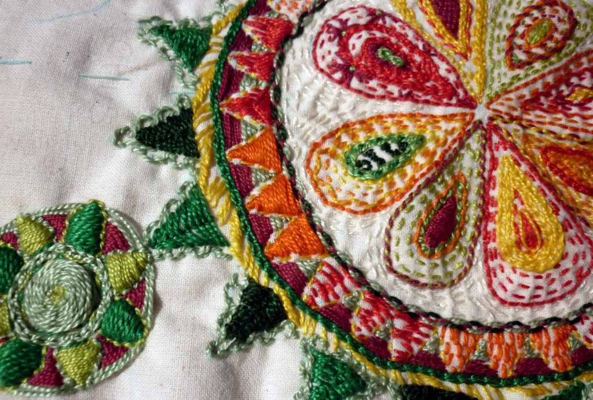
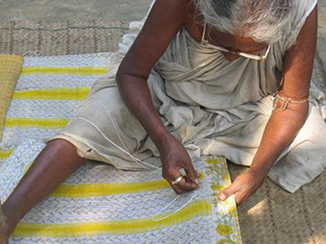
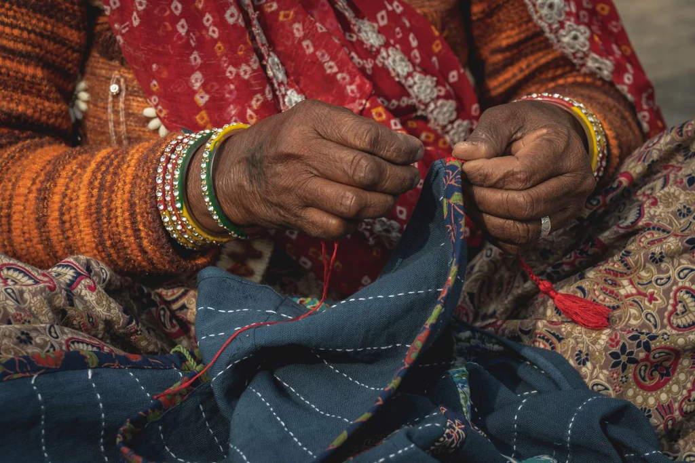
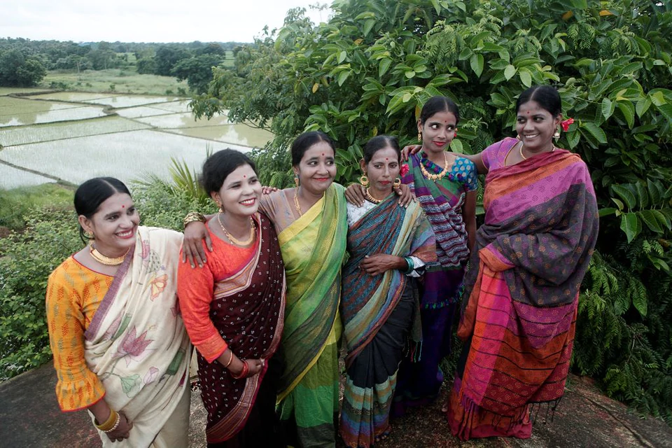

Craft and culture • apr 17th '22
Kantha, the thrifty craft of women to recycle old saris into light quilts has had an extraordinary journey with the involvement of some of the most famous names in history, including Rabindranath Tagore and his family. The work of the late Meera Mukherjee — gifted sculptor, writer, painter — is relevant in this context. It is unbelievable, humbling that an artiste of her stature would work with village women to create such fine Kantha wall panels which could rival paintings.

Craft and Culture • sep 7th '21
Taught by their mothers, who in turn were taught by their mothers, the women have now made kantha stitching their livelihood. Through training, experience and perseverance, these artisans have elevated kantha from a craft creating items for personal use, to an art-form in products sold across the world.The work is perfectly suited to the needs of the artisans - they pick the materials from the cooperative office once a week, and then work at home in their own time and at their own pace. They deliver the piece once it's complete and receive their payment. The cooperative provides training and loans, as well as regular work and payments at least 2X above market rates.

Culture • Jul 5th '22
Practical, austere and often celebratory—Kantha, in India is a textile tradition that first appeared in the 18th-19th century. This embroidery technique has strong links to Hindu mythology (it was found in Krishnadas Kaviraj’s 500-year-old book Chaitanya Charitamrita) and it is also one of the earliest examples of feminist art. In Bengal, rural women have kept this tradition thriving by repurposing and stitching together layers of soft saris and old dhotis.

Craft and Culture • Dec 5th '21
Lotus motif is the most common motif found in kanthas. This motif is associated with Hindu iconography and thus is also very popular in the kantha. Lotus is the divine seat, it is also symbolic of cosmic harmony and essential womanhood. Lotus is the symbol of eternal order, of the union earth water and sky. It represents the life giving power of water but is also associated with the sun for the opening and closing of the petals. It is also the symbol of recreating power of life. With the drying up of water the lotus dies and with the rain it springs to life again. Lotus is associated with purity and the goddess Laksmi, the goddess of good fortune and abundance. There are various forms of lotus motifs like eight-petalled astadal padma to the hundred petalled satadal. In the older kanthas the central motif is almost always a fully bloomed lotus seen from above.

Craft and Culture • May 26th '22
Kantha embroidery is practised by both Hindu and Muslim women in the region. The Hindu Kayastha women make figurative, elaborate and fine embroidery. It is majorly gifted during the wedding, during the Shashti puja for a new born child, and annaprasana, or when an infant is fed with its first solid food. The Kanthas of Muslim women have less figurative work and more ornate motifs.In the finest kanthas, the stiches are so cleverly made that that appear exactly same on both the sides. There are many kinds of stiches but the commonest and the most typical is small darning stitch which produces a dotted effect worked through all layers of the fabric, forming a pattern on both the sides. Other stitches are satin stitch, loop stitch, stem stitch among others.


.jpg)